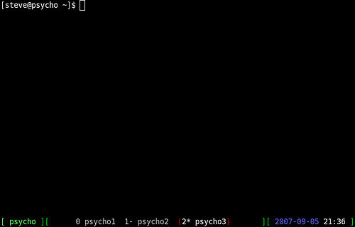

A 'revisited' guide to GNU Screen
By Anderson Silva and Steve 'Ashcrow' Milner
Remember how tabbed browsing revolutionized the web experience? GNU Screen can do the same for your experience in the command line. Screen allows you to manage several interactive shell instances within the same "window". By using different keyboard shortcuts, you can shuffle through the shell instances, access any of them directly, create new ones, kill old ones, and attach and detach existing ones.
Instead of opening up several terminal instances on your desktop or using those ugly GNOME/KDE-based tabs, Screen can do it better and simpler.
Not only that, with Screen you can share sessions with others and detach/attach terminal sessions. It is a great tool for people who have to share working environments between work and home.
By adding a status bar to your screen environment, you are able to name your shell instances on the fly or via a configuration file called .screenrc that can be created in the user's home directory.
Installation
Installing screen on a Fedora system is quite easy with yum, assuming you have root access.
-
Login as root:
su - # enter root password
-
Use yum to install it:
yum install screen
On Debian based distributions like Ubuntu:
-
As root:
apt-get install screen
Enter your password. After a few minutes (depending on your network connection), Screen will be installed. But before you start playing around with it, let's look at how to do some basic configuration.
Customizing the configuration file
Screen keeps its configuration file in the same vein that many applications do: in a dot file in your user's home directory. This file is aptly named .screenrc. In my experience, most people use ~/.screenrc to do two things:
- Make a hardstatus line. This is basically a line at the bottom of the screen that lists your current terminal and all opened ones. It can also display the system clock and the hostname.
- Default screens on startup. It's quite nice to have your IRC connection, mail client, and default SSH connections auto-start for you!
The lines below are numbered for reference. Your config file should not have numbered lines.
1 hardstatus alwayslastline
2 hardstatus string '%{= kG}[ %{G}%H %{g}][%= %{=kw}%?%-Lw%?%{r}(%{W}%n*%f%t%?(%u)%?%{r})%{w}%?%+Lw%?%?%= %{g}][%{B}%Y-%m-%d %{W}%c %{g}]'
3
4 # Default screens
5 screen -t shell1 0
6 screen -t shell2 1
7 screen -t server 2 ssh me@myserver
On lines 1 and 2, you are setting the hardstatus. Line 1 makes the hardstatus always show up as the last line. Line 2 is what will be shown in the hardstatus line. In this case you will see something like this at the bottom:

As you change screens, you will see the parentheses move around the active screen.
Line 4 is a comment, as it starts with #. Lines 5-7 are all screen statements in the following format:
screen -t NameOfScreen ScreenNumber ShellCommand
Shortcuts
The following are some of the most commonly used shortcuts that let you navigate through your screen environment. Note that unless modified by your .screenrc, by default every screen shortcut is preceded by Ctrl+a. Note also that these shortcuts are case-sensitive.
- 0 through 9 – Switches between windows
- Ctrl+n – Switches to the next available window
- Backspace – Switches to the previous available window
- Ctrl+a – Switches back to the last window you were on
- A – Changes window session name
- K – Kills a window session
- c – Creates a new window
- [ - Then use arrows to scroll up and down terminal
- " - Displays a lists of all opened tabs allowing navigation with your arrow keys.
You can learn more about shortcuts in Screen's man pages. In your terminal, run:
man screen
Sharing a session with others
Another great application of Screen is to allow other people to login to your station and to watch the work you are doing. It is a great way to teach someone how to do things in the shell.
Note: Screen has to be SUID if you want to share a terminal between two users. SUID allows an executable to be run with the privileges of the owner of that file, instead of with the user's own privileges. There are some security concerns when doing this, so use this tip at your own discretion.
Setup to allow screen to be shared
First, as root:
chmod u+s /usr/bin/screen chmod 755 /var/run/screen
Log out of root, and run Screen as the user who is going to share the session:
screen
Under your new screen session:
-
Press Ctrl+a, then type ':multiuser on' and press Enter.
-
Press Ctrl+a, then type ':acladd $username'
Where $username is the username of the person who will connect to your screen session.
Connecting to the shared screen
Now that a screen session is being shared by following the previous steps, let's attach ourselves to the session and watch it by connecting to the machine via ssh and entering the following command:
screen -x $username/
Where $username is the username of the person who is sharing the screen session, and yes, you do need slash (/) at the end of the command.
And now both the users (from the host and guest) will be sharing a screen session and can run commands on the terminal.
Working from multiple locations
Let's say you have a screen session open at work with X number of windows on it. Within those screens you may be running an IRC client, an SSH connection to the web server, and your favorite text-based email client. It's 5 p.m. and you have to go home, but you still have work left to do.
Without Screen you would probably go home, VPN into your company's network, and fire up all the shells you need to keep working from home. With Screen, life gets a little easier.
You can simply SSH into your workstation at work and list your available screen sessions with the command:
screen -ls
And connect to the sessions you were running at work with the command:
screen -x screen_session_name
This way screen will let you pick things up exactly from where you left off.
Once you get used to the shortcuts in GNU Screen, not only will your desktop become more organized (due to the lower number of open windows), but your efficiency as a developer or system administrator will increase not only at work but at your home office as well.
Talkback: Discuss this article with The Answer Gang
Anderson Silva
![[BIO]](../gx/authors/silva.jpg)
Anderson Silva works as an IT Release Engineer at Red Hat, Inc. He holds a BS in Computer Science from Liberty University, a MS in Information Systems from the University of Maine. He is a Red Hat Certified Engineer working towards becoming a Red Hat Certified Architect and has authored several Linux based articles for publications like: Linux Gazette, Revista do Linux, and Red Hat Magazine. Anderson has been married to his High School sweetheart, Joanna (who helps him edit his articles before submission), for 11 years, and has 3 kids. When he is not working or writing, he enjoys photography, spending time with his family, road cycling, watching Formula 1 and Indycar races, and taking his boys karting,
Steve 'Ashcrow' Milner
![[BIO]](../gx/2002/note.png)
Steve 'Ashcrow' Milner works as a Security Analyst at Red Hat, Inc. He is a Red Hat Certified Engineer and is certified on ITIL Foundations. Steve has two dogs, Anubis and Emma-Lee who guard his house. In his spare time Steve enjoys robot watching, writing open code, caffeine, climbing downed trees and reading comic books.